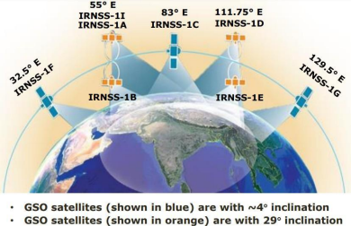
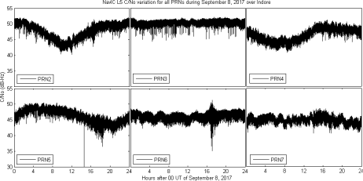
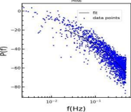
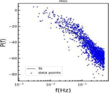
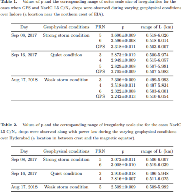

Utilization of Navigation with Indian Constellation (NavIC) for space weather and upper atmospheric studies
Ionospheric irregularity studies are important aspects for understanding ionospheric physics and related processes, especially near the low-latitude regions. This work, for the first time, shows the nature of the ionospheric irregularities present during these observation days and sets a path forward for further studies of the other scintillation causing irregularities over the dynamic low-latitude regions of the globe. This work is beneficial to the space physics community and pertinent to the radio astronomy community, where understanding the nature of the ionospheric variabilities and their corresponding mitigations becomes important for fruitful astronomical studies of radio sources.
The ionosphere is the ionized (where an atom or a molecule acquires a negative/positive charge by gaining/losing electrons, with the resultant being an ion) region of our planet’s atmosphere, extending from 60 km to beyond 1000 km above the surface of the Earth, with the equatorial and low-latitude regions, confined within ±30° latitude, accounting for nearly one-third of the total global ionization. It has deleterious effects (loss of communication, loss of signal, error in precise positioning, etc.) on high frequency (MHz to GHz range) radio communications, and global navigation satellite systems (GNSS) (like the GPS). As long-range radio waves (about 30-500 kHz) are significantly affected by the ionosphere, constant observation of the ionospheric uncertainties is crucial for communication and navigational systems to work with higher efficiency. The ionosphere, in addition to daily variation, becomes perturbed due to the geomagnetic storms, which are responses of our planet’s magnetosphere to solar eruptions like the Coronal Mass Ejections (CMEs) and the solar flares.
An important phenomenon related to the equatorial and low-latitude ionosphere is the scintillation of satellite signals. One can imagine these scintillations to be analogous to the stars that twinkle in the night sky as a result of variations in the density of the atmosphere. More scientifically, the process of post-sunset plasma instabilities in the equatorial ionosphere generates irregularities and large-scale depletions in the electron density (the plasma bubbles). Radio waves propagating through these irregularities experience the processes of diffraction and scattering, which cause random fluctuations, in the Very High Frequencys’ (30-300 MHz) and L-band’s (1-2 GHz) signal amplitude, phase, the direction of propagation and polarization referred to as scintillations.
The Indian Space Research Organisation (ISRO)-developed Navigation with Indian Constellation or NavIC (motivated by the word: नाfवक) is a satellite constellation consisting of geostationary orbit (GEO) and geosynchronous orbit (GSO) satellites in its space segment at an altitude of about 36000 km above the surface. It is designed and developed to provide positional accuracy information to Indian users and extends to about 1500 km region from its boundary (https://www.isro.gov.in/SatelliteNavigationServices.html). These satellites broadcast signals in 24 MHz bandwidth of spectrum in the L5 (117.45 MHz) and the S1 (2492.028 MHz) frequencies. The broad applications of NavIC are transportation: terrestrial, aerial as well as marine, location-based services, personal mobility, resource monitoring, surveying and geodesy, time dissemination and synchronization, safety-of-life alert dissemination, and scientific research related to the upper atmosphere and space weather impacts on communication and navigational systems.

Figure 1: The schematic of the GEO and the GSO satellites of NavIC.
Credits: https://www.unoosa.org/documents/pdf/icg/2022/Tokyo2022/NavIC_GNSS_Training2022.pdf
The current publication presents an effort to calculate the scale sizes of these ionospheric irregularities to have caused scintillations in the L-band NavIC and GPS under geomagnetically quiet and disturbed conditions. Ionospheric observations from GPS and NavIC receivers placed at the locations Indore (near the equatorial ionization anomaly (EIA)) and Hyderabad (in between EIA and the magnetic equator) are selected for this purpose. They are located in and around the low-latitude region (which by itself is highly dynamic in terms of variability in the ionization, especially due to the presence of the EIA) over India. One of the fundamental parameters of any GPS receiver is the signal intensity from which the carrier-to-noise (C/No in dB-Hz) and the corresponding scintillations are observed.
In this work, data were from a GNSS receiver, operational at the Department of Astronomy, Astrophysics and Space Engineering (DAASE), Indian Institute of Technology Indore (IITI), capable of receiving GPS L1 (1575.42 MHz), L2 (1227.60 MHz), and L5 (1176.45 MHz) signals and specialized for ionospheric monitoring and space weather research. Here, the amplitude and phase samples get generated at 50 Hz to calculate the C/No. We followed a similar procedure as shown in (https://doi.org/10.1016/j.asr.2019.12.019). Data were also taken from the NavIC receivers, capable of receiving L5 and S1 (2492.028 MHz) signals along with the GPS L1 signal. both operational at the DAASE, IITI and the Department of Electronics and Communication Engineering, Osmania University, Hyderabad.
Figure 2 shows how this C/No varied with respect to the time of the day (in Universal Time, UT) for the 7 satellites of NavIC (PRNs 2-7) during the strong space weather event on 08 September 2017 over Indore.

Figure 2: The C/No (dB-Hz) variation during the disturbed day of September 8, 2017, as observed by the L5 signal of NavIC satellite PRNs 2-7 over Indore.
Credits: https://arxiv.org/abs/2203.02218
For analysis of the irregularity scale sizes responsible for the drops observed in PRNs 5 and 6 in the above figure, we use the power spectral analysis which is motivated by the ionospheric phase screen model (https://agupubs.onlinelibrary.wiley.com/doi/abs/10.1029/RS014i006p01135). The following figure shows the power law behavior of the 1-hour time bin (number of data points in 1 bin = 3600) around the C/No drops observed earlier.
 
Figure 3: The power spectral density variations with the least square fit (black solid line) corresponding to the bins of intense C/No variation of Figure 2
Credit: https://arxiv.org/abs/2203.02218
Using the phase screen theory, we then calculate the slope and the corresponding irregularity scale sizes responsible for the variations in the C/No observed in Figure 2. We have validated this with a similar observation using the GPS receiver over this location.
Finally, we performed the same analysis for two other cases (under quiet and moderate geomagnetic activity) and calculated the slopes (p) and the probable scale sizes (L) of irregularities that were present and have caused C/No drops or scintillations in the NavIC satellite signals. The tables (Credit: https://arxiv.org/abs/2203.02218) below show the same.

This work, for the first time, shows the nature of the ionospheric irregularities present during these observation days and sets a path forward for further studies of the other scintillation causing irregularities over the dynamic low-latitude regions of the globe. This work is beneficial to the space physics community and pertinent to the radio astronomy community, where understanding the nature of the ionospheric variabilities and their corresponding mitigations becomes important for fruitful astronomical studies of radio sources.
Original paper: First results of Low-latitude Ionospheric Irregularities measured by NavIC and GPS near the Anomaly Crest and the Magnetic Equator
First Author: Sumanjit Chakraborty
Co-authors: Abhirup Datta, Deepthi Ayyagari
First author’s Institution: Physical Research Laboratory (PRL), Ahmedabad, India.